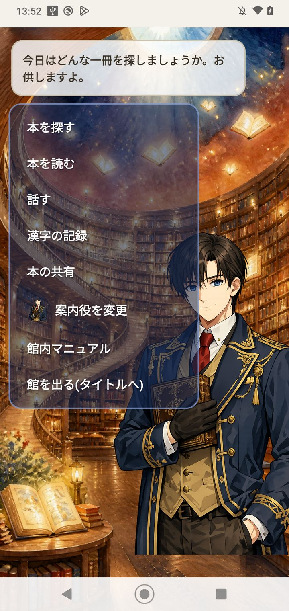
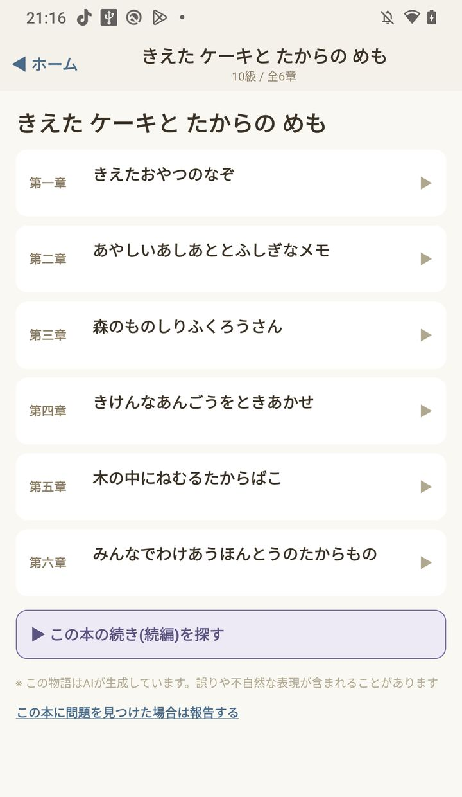
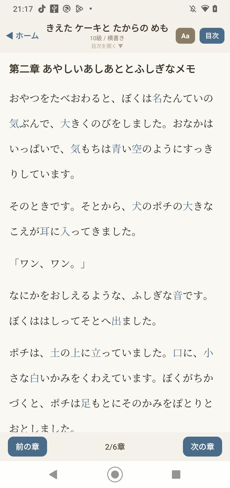

不思議の図書館
漢字読み学習
テスト中漢字のレベルに合わせて小説を読むアプリです。学年や級を選ぶと、その範囲で書かれた話が出てきます。

館に入った画面です。本を探す、本を読む、話す、漢字の記録、本の共有から進みます。案内役が、今日はどんな本を探すかと聞いてきます。

10級の本を開いたところです。章の題はひらがなが中心で、全6章あります。下には、この本の続きを探すボタンと、文章がAIで作られているという注意が出ています。

本文です。上に「10級 / 横書き」と出ていて、文はひらがな中心、一部の漢字だけが青字です。右上の Aa で文字の大きさを変え、下のボタンで前の章と次の章に移ります。